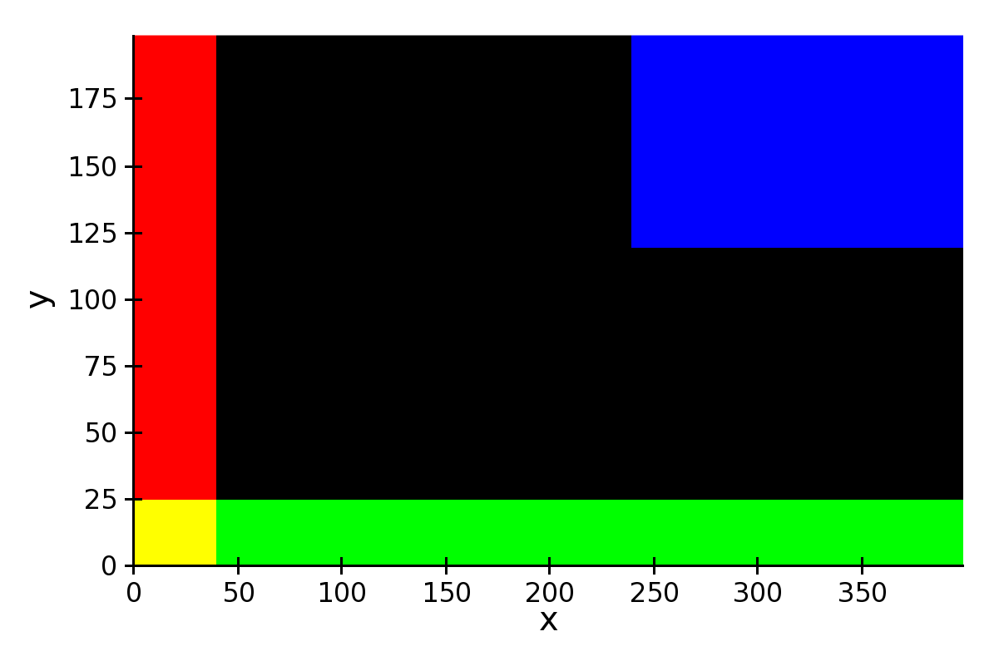

Plot Types¶
This section gives an overview of individual plot classes in Chaco.
The code to generate the figures in this section can be found in the directory tutorials/user_guide/plot_types/ in the examples directory.
For more complete examples, see also the annotated examples page.
X-Y Plot Types¶
These plots display information in a two-axis coordinate system. Unless otherwise stated, they are subclasses of BaseXYPlot.
grids
hittest
selected
Line Plot¶
Standard line plot implementation. The aspect of the line is controlled by the parameters
- line_width
- The width of the line (default is 1.0)
- line_style
- The style of the line, one of ‘solid’ (default), ‘dot dash’, ‘dash’, ‘dot’, or ‘long dash’.
- render_style
- The rendering style of the line plot, one of ‘connectedpoints’ (default), ‘hold’, or ‘connectedhold’
These images illustrate the differences in rendering style:
renderstyle='connectedpoints'

renderstyle='hold'

renderstyle='connectedhold'

Scatter Plot¶
Standard scatter plot implementation. The aspect of the markers is controlled by the parameters
- marker
- The marker type, one of ‘square’(default), ‘circle’, ‘triangle’, ‘inverted_triangle’, ‘plus’, ‘cross’, ‘diamond’, ‘dot’, or ‘pixel’. One can also define a new marker shape by setting this parameter to ‘custom’, and set the custom_symbol parameter to a CompiledPath instance (see the file demo/basic/scatter_custom_marker.py in the Chaco examples directory).
- marker_size
- Size of the marker in pixels, not including the outline (default is 4.0).
- line_width
- Width of the outline around the markers (default is 1.0). If this is 0.0, no outline is drawn.
- color
- The fill color of the marker (default is black).
- outline_color
- The color of the outline to draw around the marker (default is black).

Colormapped Scatter Plot¶
Colormapped scatter plot. Additional information can be added to each point by setting a different color.
The color information is controlled by the color_data data source, and the color_mapper mapper. A large number of ready-to-use color maps are defined in the module chaco.default_colormaps.
In addition to the parameters supported by a scatter plot, a colormapped scatter plot defines these attributes:
- fill_alpha
- Set the alpha value of the points.
- render_method
Set the sequence in which the points are drawn. It is one of
- ‘banded’
- draw points by color band; this is more efficient but some colors will appear more prominently if there are a lot of overlapping points
- ‘bruteforce’
- set the stroke color before drawing each marker
- ‘auto’ (default)
- the approach is selected based on the number of points
In practice, there is not much performance difference between the two methods.
In this example plot, color represents property-tax rate:

Candle Plot¶
A candle plot represents summary statistics of distribution of values for a set of discrete items. Each distribution is characterized by a central line (usually representing the mean), a bar (usually representing one standard deviation around the mean or the 10th and 90th percentile), and two stems (usually indicating the maximum and minimum values).
The positions of the centers, and of the extrema of the bar and stems are set with the following data sources
- center_values
- Value of the centers. It can be set to None, in which case the center is not plotted.
- bar_min and bar_max
- Lower and upper values of the bar.
- min_values and max_values
- Lower and upper values of the stem. They can be set to None, in which case the stems are not plotted.
It is possible to customize the appearance of the candle plot with these parameters
- bar_color (alias of color)
- Fill color of the bar (default is black).
- bar_line_color (alias of outline_color)
- Color of the box forming the bar (default is black).
- center_color
- Color of the line indicating the center. If None, it defaults to bar_line_color.
- stem_color
- Color of the stems and endcaps. If None, it defaults to bar_line_color.
- line_width, center_width, and stem_width
- Thickness in pixels of the lines drawing the corresponding elements. If None, they default to line_width.
- end_cap
- If False, the end caps are not plotted (default is True).
At the moment, it is not possible to control the width of the central bar and end caps.

Errorbar Plot¶
A plot with error bars. Note that ErrorBarPlot only plots the error bars, and needs to be combined with a LinePlot if one would like to have a line connecting the central values.
The positions of the exterma of the bars are set by the data sources value_low and value_high.
In addition to the parameters supported by a line plot, an errorbar plot defines these attributes:
- endcap_size
- The width of the endcap bars in pixels.
- endcap_style
- Either ‘bar’ (default) or ‘none’, in which case no endcap bars are plotted.

Filled Line Plot¶
A line plot filled with color to the axis.
The following parameters are defined:
- fill_color
- The color used to fill the plot.
- fill_direction
- Fill the plot toward the origin (‘down’, default) ot towards the axis maximum (‘up’).
- render_style
- The rendering style of the line plot, one of ‘connectedpoints’ (default), ‘hold’, or ‘connectedhold’ (see line plot for a description of the different rendering styles).
FilledLinePlot is a subclass of PolygonPlot, so to set the thickness of the plot line one should use the parameter edge_width instead of line_width.

Image and 2D Plots¶
These plots display information as a two-dimensional image. Unless otherwise stated, they are subclasses of Base2DPlot.
Image Plots¶
Plot image data, provided as RGB or RGBA color information. If you need to plot a scalar 2D array as an image, use a colormapped scalar plot
loading from file
Colormapped Scalar Plot¶
Contour Plot¶
Polygon Plot¶
Other Plot Types¶
Bar Plot¶
Quiver Plot¶
Polar Plot¶
Jitter Plot¶
A plot showing 1D data by adding a random jitter around the main axis. It can be useful for visualize dense collections of points. This plot has got a single mapper, called mapper.
Useful parameters are:
- jitter_width
- The size, in pixels, of the random jitter around the axis.
- marker
- The marker type, one of ‘square’(default), ‘circle’, ‘triangle’, ‘inverted_triangle’, ‘plus’, ‘cross’, ‘diamond’, ‘dot’, or ‘pixel’. One can also define a new marker shape by setting this parameter to ‘custom’, and set the custom_symbol parameter to a CompiledPath instance (see the file demo/basic/scatter_custom_marker.py in the Chaco examples directory).
- marker_size
- Size of the marker in pixels, not including the outline (default is 4.0).
- line_width
- Width of the outline around the markers (default is 1.0). If this is 0.0, no outline is drawn.
- color
- The fill color of the marker (default is black).
- outline_color
- The color of the outline to draw around the marker (default is black).